latest release v${app.version}-${app.release}
last update ${date}
|
|
latest release v${app.version}-${app.release} |
|
|
${app.name} |
Setup a development environmentThis page is dedicated to people who develop esup-lecture, intend to contribute, or want to use use-blank to start the development of a new web application. Reminder: the development of esup-lecture is done under the Eclipse IDE, and obey quite strict rules (Checkstyle, Java compiler, Javadoc, RBE). Make sure that your Eclipse environment is properly configured before starting to code to keep the code as homogeneous as possible. If you are a new developer of project esup-lecture or intend to contribute to the project, you need to:
If you want to start the development of a new application, you have to:
All these operations are explained below. Create the project esup-commonsPlease refer to the explanations given on this page. Create the project esup-lectureScreenshots given on this page give you the main guidelines for the creation of the esup-lecture project. 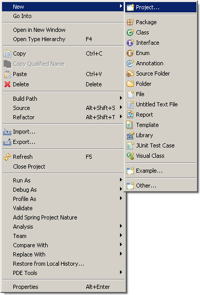 At first, check out from the SVN repository, the Java nature of the project will be set later. 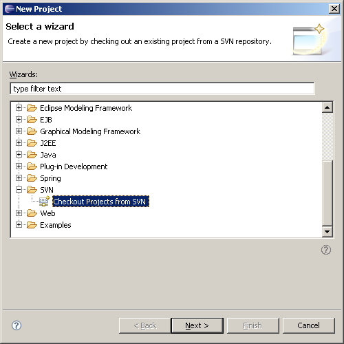
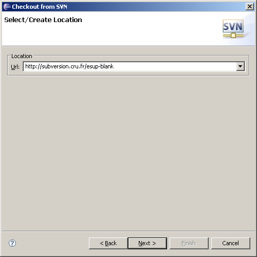 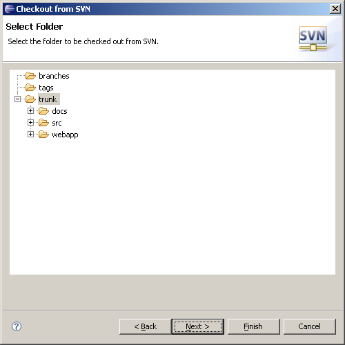 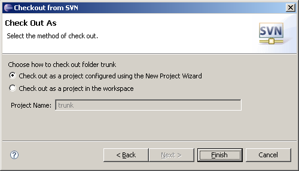 Now let us start with a Java project. 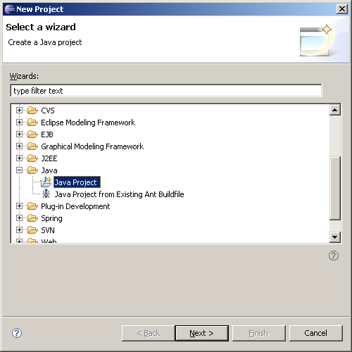 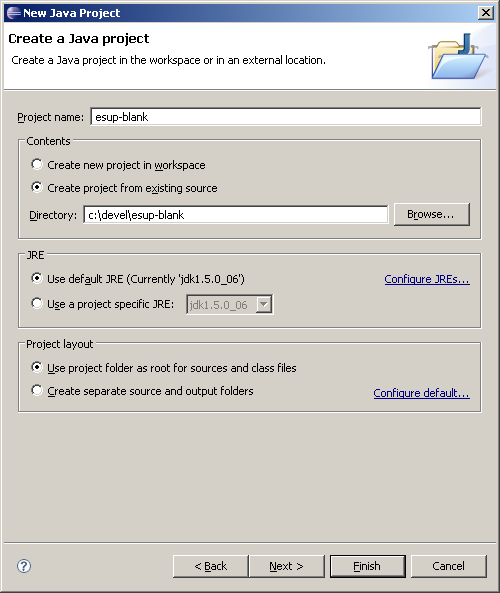 Note: at this step, there is nothing in the project. The build path will be configured later. 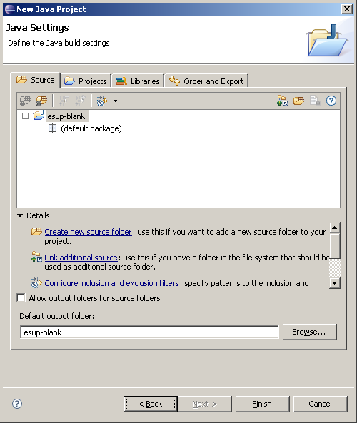 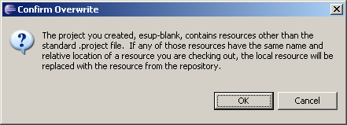 Checking out may take a little while. 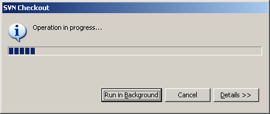 Now all the files have been copied from the SVN repository, it is time to configure the project. 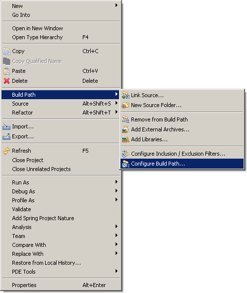 At first set the source directory. 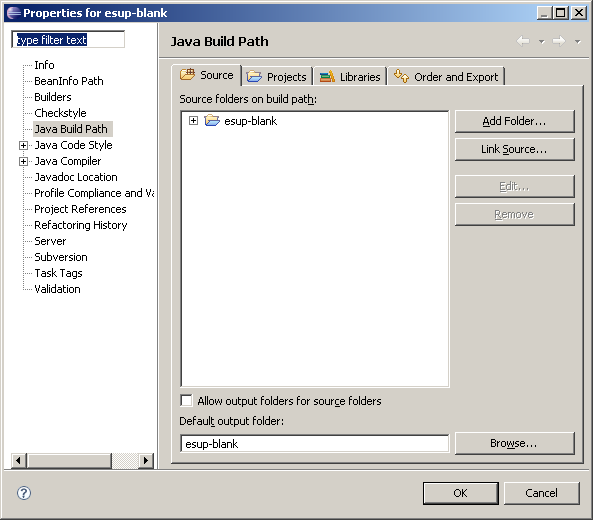 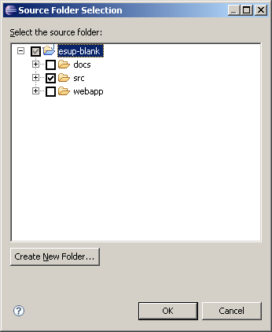 In a first step, lt Eclipse compile in 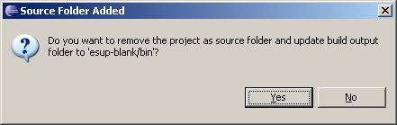 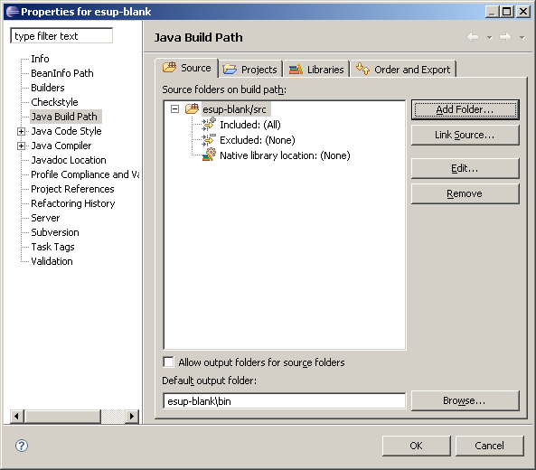 Now link to project esup-commons (previously created). 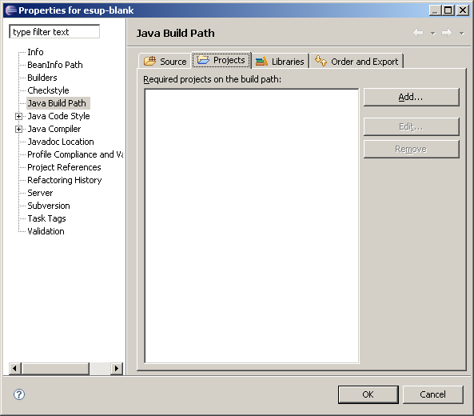
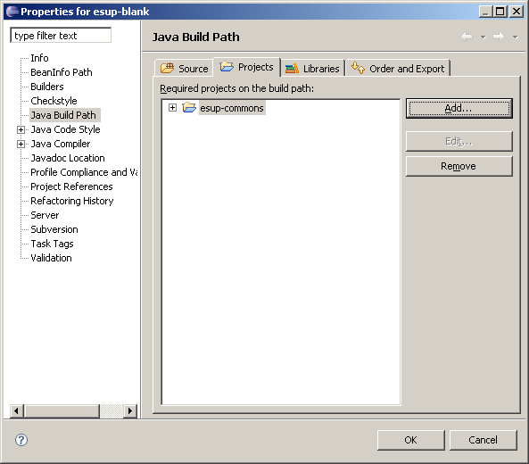 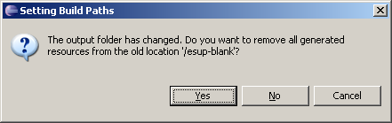 Now drag 'n drop file 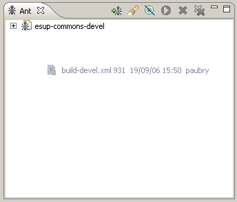 And launch target 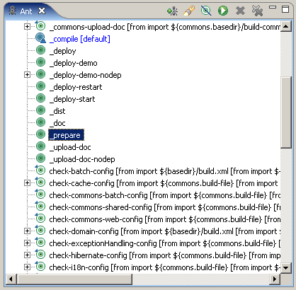 At least, refresh the project and set 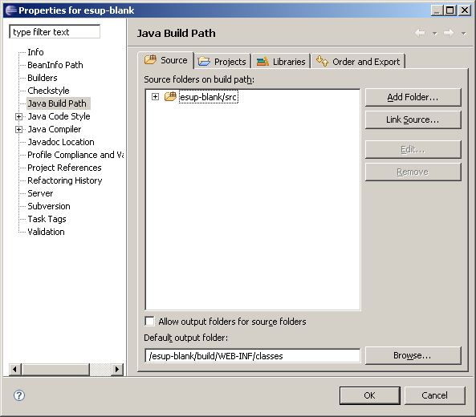 Your esup-lecture project is ready to be used. You can start the application
(ant target If you are a esup-lecture developer, you are now ready to contribute. If you intended to start the development of a new web application from esup-lecture, you have now to:
Disconnect esup-lecture from its SVN repository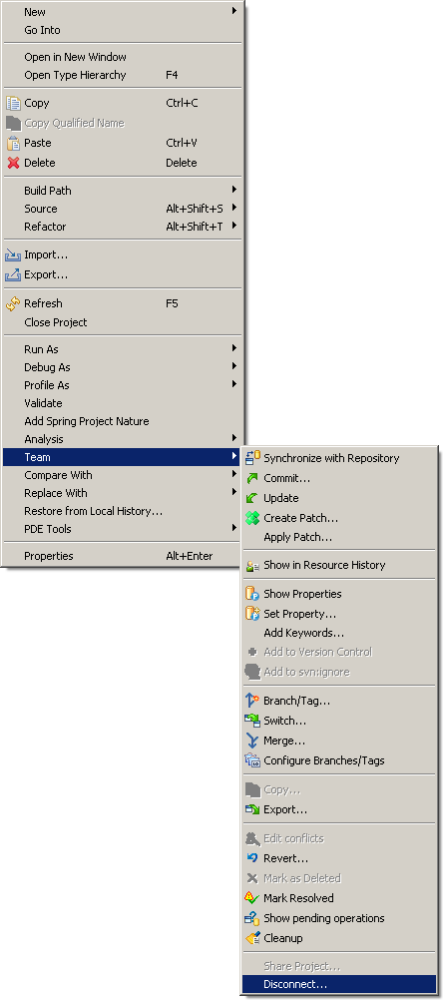 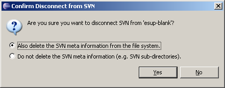 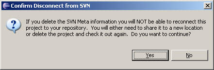 Rename esup-lecture to something elseThe target
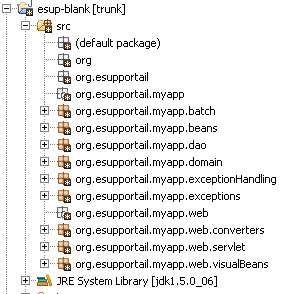 Rename the project: 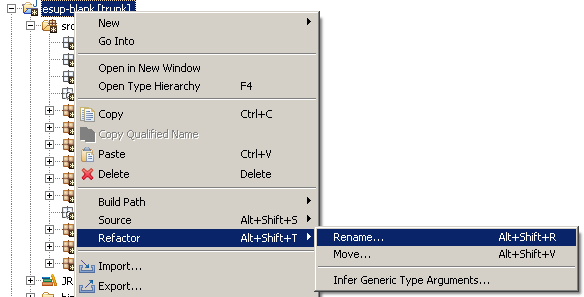 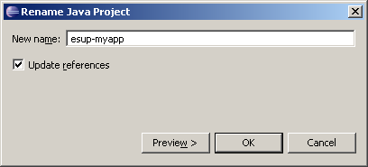 Eventually rename the base directory from You may now connect your project to a new CVS or SVN repository and go on with your own business ;-)
|
||
|
|||